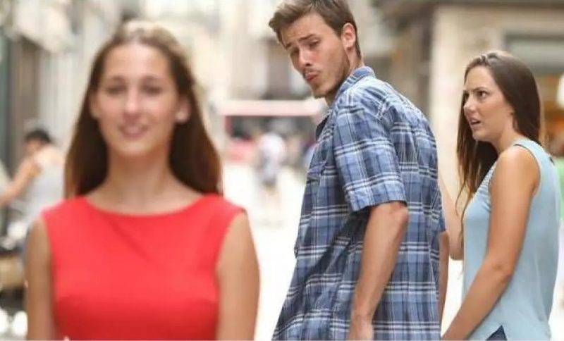
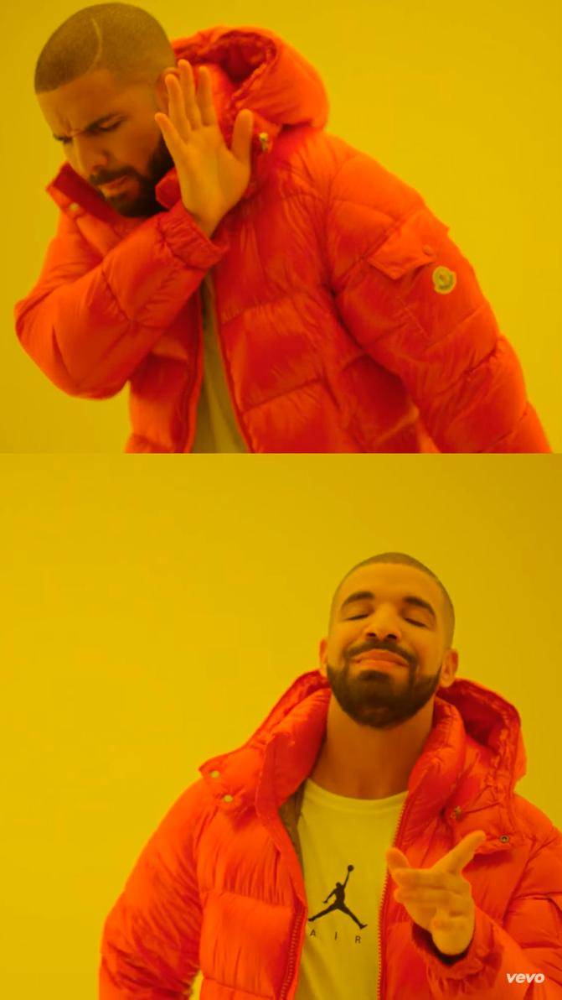
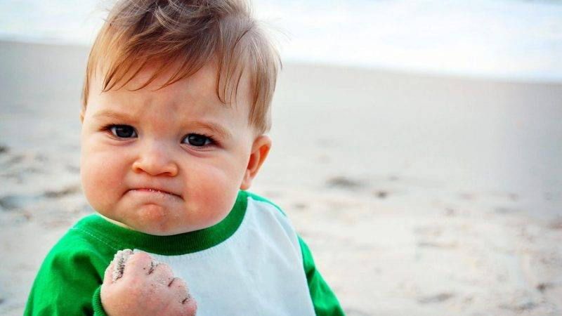
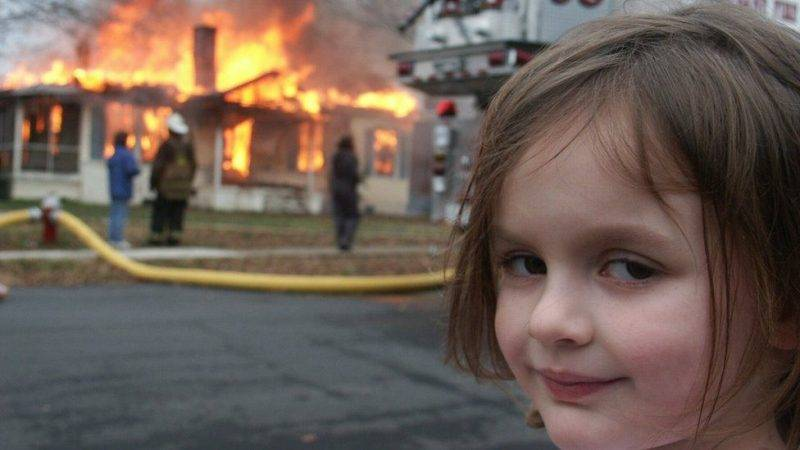
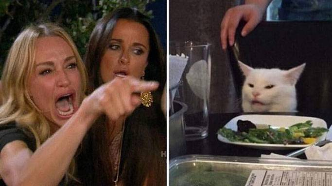

1. 分心男友
這張原本是由攝影師 Antonio Guillem 拍攝的照片，在2015年放到iStock上，描述為：「一個不忠的男人和他的女朋友一起時，卻多心地看另一個女孩。」本是一張普通的stock photo，
但在2017年，有網民於土耳其Facebook群組拿英國鼓手Phil Collins來開玩笑，將多心男主角寫上Phil Collins，身旁女友是Prog（前衛搖滾），而另一女孩則是Pop（流行音樂）。後來這張meme迷因的三角關係被多次改圖，可輕易代入不同角色或情景中，進一步讓它全球曝紅。
分心男友迷因連結2. 音樂人Drake MV
加拿人 rapper Drake在2015 年發表單曲「Hotline Bling」，並釋出MV，迅速成為當年最熱門的歌曲之一。在MV內，Drake在明亮的立方體結構中跳舞，
後來人們將MV截圖，擷取了兩張最具代表性的圖片：一張是拒絕，另一張則是笑着欣然接受。兩種相反反同樣極易套用在不場場景，如上班（拒絕），在家hea（接受）。
音樂人Drake MV迷因連結3. 成功小男孩
這個meme迷因是Dave Roth於2004年1月在北卡羅來納州的小城Mebane拍下的，是當地消防部門進行現場演習訓練，並不是真的發生火災。而父親Dave在觀察救火演習時，
就看到了身旁的女兒Zoe Roth，正對着燃燒的房子露出惡魔般的微笑。這幅奸笑女孩的meme迷因後來讓人瘋狂改圖，代表了當事人的漠不關心、幸災樂禍的心態。
4. 奸笑女孩
這meme迷因源自美國真人騷節目《超炫美式機車》（American Chopper）的第6季第1集的畫面。該真人騷於2009年4月9日播出，
其中老豆 Paul Teutul Sr. 和兒子Paul Teutul Jr. 就兒子遲到一事而產生激烈的一場吵架。這個連環發火的meme迷因圖，被搞笑地改成多個發怒場面。
奸笑女孩迷因連結5. 對貓尖叫女子
這個對貓尖叫、哭泣的女子來自名為《比佛利嬌妻》的美國真人實境劇，在2011年第二季第14集中，女演員Taylor Armstrong激動地用手指向爭吵對象，而身旁的女演員Kyle Richards則嘗試安撫她。
後在2018年6月，有Tumblr 用戶發布了一張照片：一隻白貓表情困惑地坐在椅子上，在牠前面的盤子裡有蔬菜，而帖子標題為「牠不喜歡蔬菜」。後來在2019年，有網民就將兩張風馬牛不相及的照片拼合在一起，然後配合一些不同語境，形成搞笑、諷刺的局面。
對貓尖叫女子迷因連結